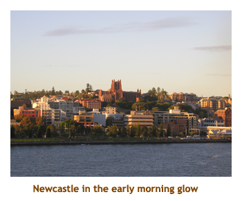
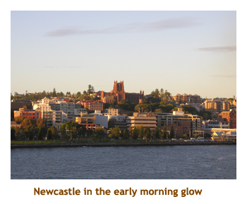
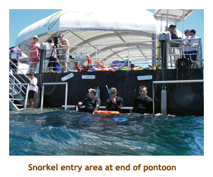
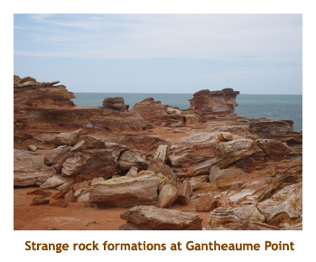
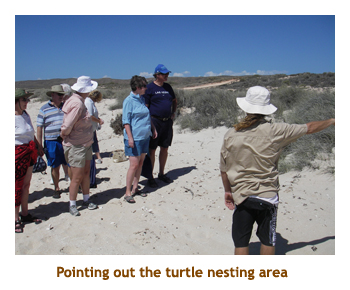
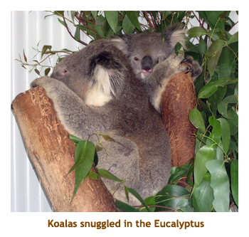
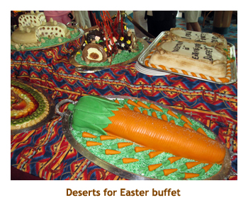

[ Home ] [ Travel ] [ Photography ] [ Pets ] [ Games] [ Rowing] [ Physics ]


Cruising on the Dawn Princess
Travel
Cruises
Past Cruises (Diaries)
Future Cruises
Rogues Galleries
Land Trips
Diaries (Land Trips)
Hawai'i - Big Island - 04'01
Hawai'i - Maui - 05'02
Hawai'i - Big Island - 04'03
Hawai'i - Kaua'i - 09'04
Hawai'i - Big Island - 04'06
Hawai'i - Maui - 04'06
Mainland China - 05'07
Phoenix, Arizona - 12'07
Greek Isles - 05'08
Hawai'i - Kaua'i - 09'08
Hawai'i - Big Island - 09'09
Hawai'i - Maui - 05'12
Hawai'i - Big Island - 04'13
Ireland - 08'13
Mexico - Cancun 11'13
France/Belgium/Lux 07'15
Hawai'i - Big Island - 05'17
England / Wales - 06'17
Hawai'i - Big Island - 09'19
Photography
Cameras
Underwater
Pets
Tara
Blackie
Whitey
Muffy
Ollie
Rusty
Fluffy
Rufus&Dufus
Games
Rowing
Physics
Rating (out of 5): Ship  Food
Food  Service
Itinerary
Service
Itinerary
After having a taste of Australia in 2008, we just had to get back again. This cruise looked good because it was 28 days long (to justify the long and expensive flight) and it circumnavigated the continent stopping at 14 ports along the way. We would be seeing most of the populated areas of the country. We booked our flight using Aeroplan points. No seats were available on the return flight until 3 days after the cruise, so Marjorie booked us for a quick land trip to Cairns and the GBR to fill in the time.
Despite the number of ports, this was not a go-go cruise. It was generally port / sea day / port / sea day so there was lots of time to relax. Only twice did we have 2 or 3 ports in a row. The cruise was intresting because it was our first one where Americans didn't dominate the roster. In fact, there were very few Americans on board. The largest groups by far were Aussies, followed by Kiwis; then Brits and Canucks. It was really refreshing to be able to meet so many from "down under" who were a wonderful bunch of people.
Dave and Joan accompanied us on this cruise and our table-for-6 dining was filled out by a wonderful couple from
New Zealand (Bob and Sheryl). Below I'll refer to our friends as D&J and B&S. We had early seating (5:30 PM) which was
fine by us. Normally there are approximately equal numbers of people signing up for early and late dining. However,
maybe because Aussies are early diners at heart, most of the passengers requested early dining. As a compromise,
Princess changed the normal seating times to 5:30 and 7:45, making the late seating time more palatable to those not able to
get early seating.
Pre-cruise (Mar 3 - 5) - Travel to Sydney
We were picked up at home by the airport shuttle about 2:30 PM on Wed, March 3 for our 6:15 PM
departure for San Francisco. Our pickup time got us to the airport in very good time. We had to wait
an hour or so before we could check in and go through US customs.Our flight to SF was 2.5 hours and on time. In SF
we had a two hour wait before boarding a 747 for Sydney (at 10:40 SF time).
We hadn't been in a 747 for years. Our second leg was 14 hours long! We
arrived in Sydney two mornings later at about 8:30 AM local time. Yes, we left on Mar 3, Mar 4 completely
disappeared, and landed on Mar 5! After going through
Aussie customs and retrieving our bags, we headed out to wait for the hotel shuttle to take us to
the Hotel Mercure Airport. On the curb we met a lady from
Portugal (Ana) who was going to the same hotel as us. Turns out she was a cruise ship worker with a Celebrity background
who was just starting a new contract with Princess. She would be a guest relations person on the Dawn Princess. I
teasingly asked her if we could start complaining already! We had to wait 1/2 hour or so for the shuttle, which was
frustrating as we could see the hotel not far from where we were standing on the curb. We couldn't walk it though
as we had too many suitcases and there was a freeway between us and the Hotel.
After arriving at the hotel and checking in, we headed out to find some
lunch. It had clouded over and looked like it was going to rain. The hotel
was situated in a Sydney suburb called Rockland. We walked through a park
into a light industrial area that featured tyres, wheels and smash repair
centers. We were in the middle of nowhere! We actually found a pub nearby
that served a nice lunch. I had a "pulled lamb" toasted sandwich with
fries. It was very good. Culture shock: I had to ask for ketchup
and was told I had to go up to the bar to get it, and, get this, I had
to pay for it! Although we never found anywhere else that we had to pay
for it, we always had to ask, even at Hungry Jacks (Burger King). At
the recommendation of a local, we hopped onto the 422 bus and had a scenic
tour into downtown Sydney. We got off at Circular Quay area. By this time
it was raining lightly. We walked around the Quay and then into downtown.
We stopped in to David Jones, the big department store. Marjorie was looking
for chocolate kangaroos (Easter) but none were to be found. We caught
the bus back to Rockland and walked in the rain back to our hotel. We
didn't bother with dinner, just had an oatmeal bar each. We stayed awake
until 8 PM and then, after being up for 36 hours or so, we headed to bed.
Day 1 (Mar 6) - Boarding at Sydney

This morning we woke up about 4 AM. Glenys and Alan (our Sydney friends) were coming over for breakfast at 9 AM. We
watched some TV and read our books until they arrived. Poor Alan had broken the end of his tibia, and
was on crutches. We had breakfast in the hotel ($25 per person - Australia is expensive!). Then A&G
drove us to Manly Beach. What a beautiful beach. We stopped at a lookout point where you
could see over the water with downtown Sydney in the distance. A&G kindly volunteered to take us to the
ship so we didn't have to do the airport transfer thingy.The traffic was quite bad (even thought it was Saturday) and we
didn't get to the ship until after 1 PM. We said goodbye to A&G. That was so nice of them to drive us around the city.
Checking in to the cruise was a breeze. It wasn't very busy in the terminal area
and we got aboard very quickly. We dropped off our carry-ons and headed up to the buffet for a drink. We ran
into D&J on the stairway as they were coming down from the buffet. The lifeboat drill was at 3:15 PM. We were
supposed to set sail at 4 PM. However, the captain announced that because of a technical problem, we would be
leaving at 5:30 PM. Our early dining was at 5:30, so we would miss the sail away. However, as we went to dinner there
was another announcement that we would be leaving at 8:00 PM. At dinner we had a table for six with D&J, and met
our new dinner mates B&S. They seemed like a very nice couple (of course, they were from NZ!).
Dinner was prime rib. Yumm! 8:00 PM came and went, but we were still at the dock.
What was going on? I half expected to wake up the next day to
find we were still in Sydney.
Day 2 (Mar 7) - Newcastle
 

So, we went to bed early last night as we were still tired from the time change, plus not
having slept on the airplane. Just as we were packing it in, another announcement was made that we would not be leaving
until 1:00 AM. Fortunately our next port, Newcastle, was only some 5 hours away. We woke up in the middle of the night
because the air conditioning had malfunctioned and it was like 100 degrees in the cabin. I looked at the clock and
it was 1:00 AM. What a fluke. The ship was not moving (oh no!), but at 1:05 the ship edged away from the dock and
we were off. Marj and I were awake
anyways, so we got dressed and headed up to the upper deck. There were a few people out and about. We watched the
city lights and the harbour. It was beautiful. We sailed under the Sydney Bridge, narrowly missing scraping the
uderside of the bridge (or so it seemed). The Sydney Opera House was lit up as well. As we sailed further out
into the harbour, we headed back to bed.
We woke up (again) at 6:00 AM and we were docking in Newcastle. Newcastle is a city of some 600,000 people. It's main claim to
fame is it's coal mines. During WW II it was a shipping center for coal and other goods. It was a gorgeous day with
sunny, blue sky. We had breakfast and then joined D&J in the theatre waiting for our 7:45
AM half day excursion. This was a
strange port as we were docked at a regular dock, but weren't allowed to disembark onto the dock. Instead we had to
tender from the other side of the ship into a ferry slip in the town. Our departure
on the tender was delayed a bit as they were
having problems with the docking pontoon used for tendering. (I think this is what held up our initial sailing as
well).
We were herded out to the buses and drove off through the city. Our first stop was at "the nobbies". These are a couple of large rock formations along the shoreline. We stopped at a beautiful beach where a large group of kids (and their families) were competing in some beach games. They were all "surf and rescue" kids learning to become the real thing as they got older. Sort of like our "cadet" groups back home. We walked to a lighthouse facility on one of the nobbies. Across the bay was the longest beach in the southern hemisphere. Then we drove past another beach and through some neighbouring towns. We ended up at an aboriginal center where we walked through some gardens, sampled some aboriginal food and drink and watched some dancers. Then we drove back towards Newcastle and stopped at another beautiful beach. Finally we drove back to the ship arriving at about 12:30. We tendered back to the ship.
We had a quick lunch and then tendered back into the town to do a little grocery shopping. I wanted some Coke or
Pepsi and Marj wanted some fruit juices. We found an IGA store. Wow, things are expensive here. A six pack of Pepsi
is 6 bucks. At home I can get a 24 pack for 8 bucks. So, loaded with drinks we tendered back enjoyed
a quiet read before getting ready for dinner. For
dinner I had the king scallops. Very good! Sail away happened during dinner. After dinner we walked the
promenade deck for a while and then went to the Vista Lounge for the entertainment. It was a Mexican / Australian
comedian / singer. He was quite funny and really sang wonderfully. I enjoyed the show.
Days 3, 4 (Mar 8, 9) - Day at sea and Brisbane
Mar 8 (sea day): This morning I was up at 6:00 AM and hustled
up to the gym for an early workout. It was closed and didn't open until
7:00 AM. Boo! Each cruise ship is different and I was used to it opening
at 6:00. I went back to the room and read for a while and headed back
up to the gym at 6:55. The doors were open and it was packed! What gives?
The gym actually had a Concept II Model D rowing machine just like mine
at home. This is the first Princess ship to have a rowing machine. About
time! All the other cruise lines (HAL, RCI, Celebrity) have rowing machines.
I did my workout, watched Corner Gas and then was off to breakfast with
Marjorie. The weather report was clear and sunny, and about 24 degrees.
However, it was actually warm and raining. But, who cares? It's a sea
day!! After breakfast, Marj went to a port talk on Brisbane, while I went
to trivia. I teamed up with another guy and we got 14 / 22. Not too shabby!
We had lunch with D&J in La Scala - a small piazza restaurant in the atrium
area. Then we met with D&J outside the Wheelhouse Bar for a game of sticks.
Afterwards we read and then prepared for dinner. For dinner I had roast
leg of lamb. Delicious. This ship had mint sauce too! The entertainment
was a repeat from the previous night. we had to set our clocks back 1
hour tonight.

Mar 9 (Brisbane): I woke up at 6:00 AM (extra hour of sleep though!).
We went up onto the deck for the approach to Brisbane and the voyage up
the Brisbane River. We went for breakfast (window seat) then returned
to the upper deck. Today looked like a sunny, blue sky day. Brisbane is
a beautiful city with lots of parks and green space. The population is
1.6 million. As we were waiting to get off the ship, I happened to be
reading our guide book and saw a koala sanctuary. We decided to go there.
We joined D&J at 9:00 AM and left the ship. We caught the shuttle bus
to downtown Brisbane. What a gorgeous city. Very new and clean. We got
off the shuttle, walked a few blocks, crossed the Victoria Bridge and
booked a river boat (the Mirimar) to the zoo. The boat wound along the
Brisbane River which was lined with gorgeous homes. It was 1.25 hours
to the zoo.

We docked, got off the boat and entered the zoo. They had koalas (of course), kangaroos, emus,
parrots, etc. There was one huge field where you could walk through with emus and kangaroos roaming about. We stopped and
petted the kangaroos. Then we went to a koala show and petted a koala. Afterwards they had a sheepdog demo (with a
flock of real sheep), and then a sheep shearing demo. Man, it was hot!
Then it was time for our 1:45 return trip on the river boat. We met
some folks from West Vancouver on the boat. We were back to town by 3 PM. What a hot day! Phew! We did a little
shopping downtown, and then caught the 3:30 shuttle back to the ship. Dinner was shrimp in egg noodles. It was good,
but only two shrimp. Of course you can never complain about not getting enough of anything on the cruise as you
can order plate after plate if you so wish. Only the size of my stomach prevents me from doing this!
The entertainment was a black comedian that we had seen last summer on another cruise. On that cruise he did
a lot of racial stuff and really offended a lot of people. His routine was still
somewhat racial, but not as bad as before. In fact, he was quite funny.
Days 5, 6 (Mar 10, 11) - Day at sea and Airlie Beach

Mar 10 (at sea): Today was another day at sea, heading to the
Great Barrier Reef (GBR). I was up early and off to the gym. Thios time
I went at 6:50 to beat the rush. When I got there the doors were open
and it was packed again. When is "7:00 AM" on this ship? After rowing
it was time for Corner Gas followed by breakfast. I went to trivia and
Marjorie did an Airlie Beach port talk. I sat with four 80 year olds for
trivia. They were all deaf. Did he say "fountain"? No, I think he said
"mountain". No, I'm sure he said "downtown". It was hilarious. We scored
12 / 20, so must have heard some of the questions right. Then we went
to a talk on the Great Barrier Reef. For lunch we did the burger BBQ by
the pool with D&J. I had hot dogs with sourkraut and onions. Mmmmm! We
frittered away the afternoon reading and walking around the promenade
deck. It was sunny and very warm out - about 30 degrees. Tonight was dress
up night. There are only three dress up nights in the 28 days. Yahoo!
For dinner I had beef medalions. Very good. The entertainment was a lady
singer. We stayed for a bit, but didn't care for the music. We went to
bed early in preparation for our snorkeling adventure tomorrow.
Mar 11 (Airlie Beach): We woke up around 6:00 AM to another beautiful
day. Today we had booked a snorkel adventure on the Great Barrier Reef.
D&J were coming with us. Airlie Beach did not have a cruise dock, so it
was a tender port. We anchored just off of Airlee Beach. We had heard
nice things about Airlie Beach and could see it in the distance, but our
excursion would take us in the other direction. We had a big breakfast
then packed up our snorkel gear. A catamaran picked us up directly from
the ship (no need to tender anywhere). We had a two hour trip straight
out from shore which had 45 minutes of very rough water. There is a deep
channel that runs between the shoreline and the GBR, deep enough to be
a shipping channel. However, the water can get very rough in this channel.
There were a few very green people by the time we arrived at a pontoon
station built over the reef. From there one could snorkel or dive, or
take a ride in a semi-submersible or a glass bottom boat. For snorkelling,
they provided a "stinger suit" - a full body wetsuit to protect against
the deadly box jellyfish. We did an hour or so of snorkelling which was OK,
but not what we were expecting. It was the warmest sea water I had ever swam in.
After changing back into our clothes, we did the semi-submersible. It was
very interesting. Lunch was a buffet of salads
and cold meats. I made a wrap. It was great.

After lunch we did a trip in the glass bottom boat. The most interesting fish was a huge Trevally Jack. Then we had a two hour return trip to the ship, with the same 45 minute stretch of heaving and rolling. Once again there were some unhappy people! We arrived back at the ship at 5:00 PM. It was quite a long day! Dinner was drunken prawns. Yumsters! Tonight's entertainment was a Johnny Cash impersonator - hopefully impersonating him while he was still alive. We skipped it.
Oh, I should mention that we often stop in at the purser's desk to say "Hi" to our friend Ana. She is the Portugese girl
that we had met on the airport shuttle days ago. She is a really bubbly and friendly girl.
Days 7, 8 (Mar 12, 13) - Day at sea and (almost) Port Douglas
Mar 12 (at sea): Today was a sea day. To beat the fitness rush,
I headed to the gym at 6:45. When I got there the doors were shut and
I was the only one there. Yahoo!. About a minute later the attendent came
to unlock the door. I walked into the gym and it was packed! Did people
sleep here overnight? Were they homeless people with no cabins? No. There
was another entry door from the outside deck that was opened first. Man,
did I take a while to catch onto that! I did my normal gym workout followed
by Corner Gas. We went for breakfast about 8:30. It was a warm and sunny
day. At 10:00, Marj and D&J headed off to a port lecture on Port Douglas,
while I went to join my trivia team. Once again it was hilarious as our
team all heard different questions (or should I say "didn't hear"). Somehow
we managed to score 15/20. Not good enough to win, but good nonetheless.
Then we did a future cruises presentation on Alaska. For lunch we did
the formal dining room. We met some folks from Kailua, Oahu. Lucky bums!
In the afternoon, we read and did a lecture called "Children of the World",
which wasn't too interesting. For dinner we decided to do the "La Scala"
Italian restaurant (no charge) instead of the regular dining room. We
invited B&S who came as well. We got there at 6:00 PM and, the restaurant
being almost empty, were about the first to order. We got our appetizers
and salads a bit slow. Much later, the three of us who had ordered pizza
got their meals. When they were done, Marj and Dave got their lasagne
(after some complaining to the maitre'd). I think the kitcvhen had lost
the order. After M & D had finished, I finally got my rollatini. It was
piping hot, so there was no way I could eat it quickly. By now it was
now 8:00 PM and we wanted to go to an 8:15 show. So, everyone left me
(except Marj) and went to save us some seats in the theatre. We made it
to the show just before it started. The entertainer did a mime routine
with many masks, then some magic stuff and finally some hand shadow stuff.
He was excellent. We headed off to bed early as we had a 7:15 excursion
coming up in Port Douglas.
Mar 13 (at sea): We woke up this morning at 6 AM and got up. We were
about to anchor off the town of Port Douglas and we wanted to watch the
process. This was a tender port. We had a 7:15 excursion - train and cable
car. The previous night was quite bouncy with wind and waves. It was currently
cloudy with some blue patches. By breakfast, it was pouring in rain. As
we packed our backpacks for the tour, an announcement came that due to
the wind and the waves, it was not possible to tender. Our Port Douglas
stop was being cancelled! In 29 cruises, we have only had ports cancelled
due to weather on two cruises - our most recent two actually (Antarctica
and this one). However, this couldn't have been a better port to cancel
because ... well, when Marjorie booked our flights using Aeroplan points,
she couldn't get us back until 3 days after the cruise. So, she had booked
a land tour to Cairns (Port Douglas) to fill in the days after the cruise.
So we will be coming back here anyway for a couple of days. We were not
thwarted yet! Our two day cruise to Darwin was now a slower three day
cruise. As soon as I heard the cancellation announcement, I put on my
gym clothes and headed up for a workout. We read and then played trivia
(same group) this AM. We scored 15/20 again. We were happy with that.
We ate lunch in the buffet. After lunch we played hand and foot with D&J.The
sun came out and it was quite hot. We read on our balcony for a while
enjoying the sunshine. Tonight we were back to the main dining room for
dinner. Much better service! I had the spinach quiche and it was very
good. I had Cherries Jubilee for desert - my favorite. For the entertainment,
we did the mask and mime show again. It was repeated and we enjoyed it
so much the first time we went again. It was great. Then it was bed time.
Days 9 - 11 (Mar 14 - 16) - Two more days at sea and Darwin
Mar 14 (at sea): Today was a planned day at sea. It was bright
and sunny out and very warm (and humid). This morning we sailed through
the pass between the northernmost tip of Australia and Papua / New Guinea.
We heard that you could actually see New Guinea from the ship, but there
were so many islands here that you don't know which is which. And, because
we skipped Port Douglas yesterday, we were a day ahead of schedule. So,
we were sailing very slowly. In fact, passengers were jumping off the
back of the ship and swimming to the front to get back aboard! (Just kidding).
We went for breakfast and then I did my gym workout. Marjorie did laundry.
She didn't like the ship's laundry service (which is free) and enjoyed
doing it herself. Everyone to their own! We played trivia with D&J and
B&S. My other team was devastated that I couldn't join them. Well, I like
to pretend they were devastated. We scored 16/20, but one team scored
20. B&S are quite good at trivia, especially any of the Aussie or NZ questions.
We ate lunch in the main dining room. After lunch we met with our B&S
(and D&J) for some 6 handed hand and foot (in the Casino where they had
card tables). Then we read our books on the promenade deck. For dinner
I had garlic shrimp. The entertainment was the trio that usually played
in the atrium each evening. They were from the Ukraine and featured accordian,
flute and guitar. They were excellent.
Mar 15 (at sea): Another day at sea, still heading to Darwin. It was
really warm today - 31 degrees and very humid. We had an early breakfast
and then I did a gym workout. I watched an episode of Corner Gas and then
headed off to trivia. I played with B&S and scored 13/20. Not nearly good
enough to win. We went to La Scala for lunch. The pizza is great there
- thin crust and lots of toppings. After lunch, we met with D&J and B&S
to play some more 6 handed hand and foot. Actually, we just finished off
the game we started yesterday. Of course the New Zealanders won! We played
just outside the Wheelhouse Bar where an art auction was going on. I hope
we didn't disturb them. It was almost 4 PM, so we grabbed our books and
read on the promenade deck. For dinner I had leg of lamb with real mint
sauce. Yummy. Dave and I went to the entertainment. It was two half shows
- the Johnny Cash / June carter impersonators and then a comedian. It
was very good. We turned our watches back 1/2 hour tonight. Australia
has 1/2 hour time zones, sort of like New Foundland.
Aussie road trains: Australia has vehicles called "road trains". These are gravel trucks, oil trucks, semi trailers, etc. that have 3 or more (up to 6) trailers. They require special licenses, but travel on the main highways at the posted speed. They are huge. Some of them can carry up to 250 tons of whatever. Hope thay don't get these on the Deerfoot!
Aussie war notes: After visiting Newcastle and Darwin, my eyes
have been opened about Australia and WW II. The Japanese attacked various
Aussie cities from submarines, warships and bomber aircraft, killing lots
of people. There are many structures from the war all around the coast
- air fields, gun emplacements, fuel bunkers, etc. I had assumed that
like North america, Australia had been untouched. Not so!!
Mar 16 (Darwin): We got an extra 1/2 hour sleep-in this morning. Gotta
love these time zones! We were to dock in Darwin at 9 :00 AM, so we did
a later than normal breakfast. We met "Johnny Cash" in the buffet area
and I thanked him for the concert. He was a lot shorter up close - 2/3
scale of what I remember from the real Johnny Cash. We docked at 9:00
AM and met for our tour at 9:15. However, there was a delay in disembarking
so we didn't get off the ship until almost 10:00. It was 38 degrees today
and extremely humid. We boarded the bus for a two hour drive through the
"bush" to Litchfield Park. In Australia, they don't call it a forest -
they call it a bush. Just before entering the park, we toured through the
small town of Batchelor. We stopped at an outdoor restaurant for lunch.
Then we visited two gorgeous waterfalls - Wangi Falls and Florence Falls.
There had been lots of rain lately, so there was a lot of water in the
rivers and falls. Besides seeing the falls, we saw a large (flock?, herd?,
crowd?) of fruit bats (also called flying foxes). They are huge bats and
were hanging from the higher tree branches. There must have been a hundred
of them. We also saw a small monitor (lizard) and a cute little rock wallaby.
The wallaby was about the size of a large rabbit. Then we stopped at a
section of the bush that had huge termite mounds (some 6 to 8 feet in
diameter and 10 to 12 feet tall). What a strange land.
We drove back to the town of Darwin for a quick tour of the city. It was leveled by a cyclone in 1974, when 95% of the buildings were flattened. So, the city looks brand new. Very lovely! We got back to the ship at 5:45, late for our 5:30 diner seating. The ship was air conditioned!!! Man did that feel good. We hustled to our cabin, showered and joined our Kiwi dinnermates at 6:00 PM. D&J did the same tour as us, but on a different bus and they didn't get back until 6 PM. They didn't show for dinner. I had seared sea scallops. The entertainment was a comedian that we had see a year or so ago. He did exactly the same show, so I knew all the jokes. He was still funny though. The alternate entertainment in the main theatre was cancelled due to a flood.
Interesting: I forgot to mention about how Aussies from the
Northern Territory (Darwin) refer to their territory. They sometimes call
it "the NT". Sort of like saying you live in BC. More often though they
refer to it as "the top end". Our guide was always saying "Here in the
top end ...".
Days 12, 13 (Mar 17, 18) - Day at sea and Broome
Mar 17 (at sea): Another day at sea. The temperature was still
in the mid 30's, so we wouldn't hang out around the pool today. We had to
turn our clocks back another 1/2 hour last night, so woke up 1/2 hour
earlier. I did my gym workout and then, after Corner Gas, we headed up for
breakfast. We sat with some interesting people - East Indians originally
from Suva (Fiji) who had lived 41 years in Sydney. After breaky, we read
for a while. Then Marj and D&J headed off to a port talk on Broome, while
I joined my old (deaf) trivia team. We got 15/20 again. Not too bad. I
went out to the promenade deck and the captain announced that a Coast
Guard plane would be passing by. It did, and we all waved. How's that
for excitement? For lunch we did the buffet. Afterwards we walked the
promenade deck and read some more. Then, at 4 PM we played trivia again.
This time Marj, J&D and our NZ dinnermates were there, so I once again
had to abandon my old team. We scored 16/20 and tied two other teams for
the win!!! Woohoo!! It was dress up night tonight. For dinner I had lobster
and monkfish. The entertainment featured a lady singer / impressionist.
We skipped it. Instead, we did some laps around the promenade deck watching
the end of the sunset on the port side and a thunderstorm in the distance
on the starboard side of the ship. Clocks were set back another hour tonight.
That means that we'll be up an hour earlier tomorrow.
Surviving the heat: It is really hot and steamy here at the top of Australia.
The humidity is almost 100%. Whenever we leave the air conditioned ship
to go out onto our balcony, or the promenade deck, our glasses steam up
and we can't see anything. Same with the cameras. Unless I leave them
out on the balcony to stay warm, they instantly fog up and can't be used
for 15 minutes or so. I think I mentioned earlier about not having air
conditioning
for our first night leaving Sydney. Since then we have been lucky and
the air has worked just fine. Some others aren't so lucky as there seems
to have been rotating air failures throughout the ship over the past few
days. When we walk down our mile long hallway, there are often "hot spots"
for a dozen cabins or so where the air doesn't seem to be working. We
keep our cabin turned to the lowest setting, so our room is always cold.
Mar 18 (Broome): We awoke very early this morning as we had just
put the clock back another hour. We had an early breakfast and then I
headed up to the gym. After a couple episodes of Corner Gas, I went to
trivia while the others went to a shore talk on Exmouth. Our ancient trivia
team scored 16/20, tying us with 5 other teams for the win. We lost in
the playoffs. We didn't know which is the only animal born with horns (giraffe).
We had an early lunch as our excursion into Broome was at 12:15 PM. The ship
was sailing very, very slowly this morning. We were almost there, but
had to wait until high tide (at noon) in order to dock. We also required
high tide to leave, so wouldn't be sailing out again until 11:00 PM. The ship
docked at about 12:00 PM. We boarded our tour bus about 1:00 PM.
Broome is a town that developed in the 1800's as a pearl fishery. The pearl oysters were collected not for the pearls themselves, but rather for the pearl shells. The shells are about 10 inches in diameter, very thick and were used for making buttons, mother-of-pearl inlays, etc. This industry brought over many young Japanese men who did the diving helmet thing to pick up the shells from the ocean floor. Now the city is based on pearl jewelry and tourism. About 15,000 people live in Broome.
Our first
stop was at the Japanese cemetery where most of the internees
were victims of the pearl fishing - a very dangerous prefession. The most
common causes of death were the bends and from hitting the bottom too hard.
In order to not only sink to the bottom, but to stay there in strong currents, the
divers wore weighted shoes, heavy helmets and extra weights hung from their necks
- about 80 KG of weight. If they were lowered down too fast, the crash landing
on the sea floor could kill them. Leaving the cemetery,
we drove into Broome city (about 20 minutes from the dock) and toured
a pearl factory and museum. The museum had examples of the underwater
clothing and tools used by the divers. Outside, there were several of the boats used
to transport the divers and the collected shells. There was, of course, a display of
pearl necklaces including one valued at $11,000. We didn't buy it.

After leaving the museum, we drove to Cable Beach, a famous red sand beach. This is where the famous Broome camel rides happen. There was a camel excursion sold on the ship, but we didn't see any sign of them. After a bit of a walk on the beach, we reboarded the bus and continued on to a crocodile farm. They had loads of huge, huge salt water crocodiles, alligators, etc. We even saw a 4 week old croc who was really cute. We were given about an hour or so to tour the park. Our guide that accompanied us was very good and quite knowledgeable. We then visited another beach (Gantheaume Point) where they had found dinosaur footprints. The actual footprints were only visible at low tide, so we had to be content to view a copy of the prints up on dry land. There were very intesting red rock formations lining the beach.
A final stop at
a golf course overlooking the ship in the harbour completed our tour.
The bus dropped us off at the ship about 4:00 PM. The tide had changed by
about 9 meters, so the ship was about 3 decks lower against the dock. We immediately
boarded a shuttle bus to take us back into town for some shopping. We
went to Coles (groceries) and bought some Pepsi, fruit juice, peanuts
and bullets. (Bullets are chocolate covered licorice bits). Phew it was
hot waiting for the shuttle bus back to the ship. We returned
to the ship about 5:30, showered and headed down to dinner. B&S
were there, but D&J were still on their tour. The entertainment was a
singer who sang like Tony Bennett. He was very good, but I didn't know
all of the songs.
Days 14, 15 (Mar 19, 20) - Day at sea and Exmouth
Mar 19 (at sea): Another sea day as we head towards Exmouth. It
was still 35 degrees and very humid. We could only stand being out on deck
for 1/2 hour or so before heading back in for the comfort of the cool
air. We had breakfast, then I headed to the gym. I think it was about this time
that the PM3 unit (the elctronics) disappeared from the rowing machine. So,
you could still row, but you had no idea of your distance or split times. We were
told that the battery was being replaced, but you don't have to remove the whole
unit to do that! I did another couple of
Corner Gas episodes and then went to trivia. This time it was with D&J
and B&S. We got 17/20, and the winners had 18. Not too bad. Then we went
to a presentation on luxury train travel in India. We're still not convinced
that it's a place we would want to visit. We did the buffet for lunch with J&D,
and B&S found us and joined us.
After lunch we played Jeopardy
with the NZ folks in the Vista Lounge. I think we were second place.
We really did well. Later in the afternoon was a wine tasting
that was $13, but free for Elite members. Marj was Elite, so she had a ticket,
but I was supposed to pay. I just stood there looking sad and they said
"Oh alright, go on in then". So, I didn't have to pay either. The
tasting was interesting. I tolerated the whites, but didn't like the reds.
Our final wine was a muscat desert wine which was excellent. The cheese was
good too. Then it was trivia. We did really well, but missed a couple of
easy ones. We should have won! Next time. For dinner I had glazed chicken.
It was quite good. The entertainment was a lady singer / impressionest called
Liz Taylor. She was quite good and did Cher, Tina Turner, Shania Twain,
etc. After the concert (9:45 PM) there was a stargazing session on the top
deck hosted by a kindly passenger. The captain turned off the ships lights
so that we could really see the stars. It was nice to see the southern
constellations including the Southern Cross.
Mar 20 (Exmouth): We woke up just as we were anchoring off of Exmouth. It was a tender port.
Exmouth is a new town - founded in 1967 to service a military base which has since closed down.
The population is about 2,000 (about the same as our ship!). Like Darwin
and Broome, it was extremely hot and humid. The foliage is small scrubby trees and grass, and the soil is a
rich red colour. Our excursion was in the afternoon, so we had the morning to ourselves. We had a liesurely
breakfast and watched a bit of the Indian Wells tennis. All of my favorites were out of the competition
by this time. Boo! Where's Federer when you need him? I
did a gym workout, then viewed an episode of corner gas. We grabbed a quick bite to eat at 11:00,
as we had to get to the tender by 11:15.
We tendered in from the ship, being let off at a marina full of deep sea fishing boats. We waited under the shade
of a large outdoor bar and then caught our tour van. Our guide announced that it would be 38 degrees today.
However, the humidity of Darwin and Broome had disappeared, so it wasn't as opressive. We drove through the little
town of Exmouth passing a new delux subdivision that had large homes and sea water canals. Most of the lots
were still undeveloped and it looked like they were not selling too fast.
Then we continued on out into the countryside.

The vegetation was shrubs and grass. The terrain was very flat
with occasional hills or ridges. We drove up a ridge with some small canyons to get a view of the area. Then we
drove through the deserted military base where most of the buildings had been converted into businesses or housing.
Further on we went to a turtle nesting beach at Ningaloo Reef.
There was an information kiosk that explained the life cycle of turtles (Green,
Hawksbill and Loggerhead). We walked along the beach looking at turtle nesting areas. We had worn our bathing suits
and were given about an hour to swim or snorkel off the beach.
The snorkeling was useless (murky and seaweedy) but the water was nice and warm. Then it was back to the dock to catch the 4 PM tender
(last one) to the ship. For dinner I had prime rib. Very good. The entertainment was a juggler / unicyclist that we
had seen on a previous cruise. He was excellent. We did a lap or two on the promenade deck
where there was a nice breeze and the
temperature had dropped down to the 20's. It felt so nice.
Days 16, 17 (Mar 21, 22) - Day at sea and Fremantle (Perth)
Mar 21 (at sea): We had another day at sea. We woke up around
6:00 AM and did breakfast about 7:00. It was nice and cool outside (in
the 20's). Just to warm up, I headed off to the gym. It was very quiet
there. Where was everyone? After an episode of Corner Gas, we did a port
lecture on Fremantle. We'll be there tomorrow. Then it was trivia time
(11:30 AM). We did the formal dining room lunch and met a Sydney policeman
who was a fingerprint expert. After lunch we did some reading and then
I headed up to the upper deck to sit in the sun and read. The temperature
had fallen dramatically to the low 20's with no humidity, so Marj was
very happy. Marj et al went to another port lecture, so I played 3:30
trivia with a new team. We did pretty good, but didn't win. Dinner was
tournedoes of beef - excellent.
The entertainment was a "crew show" where various crew
members sang, danced, did magic, etc. It's always popular with the old folks. We got to the theatre a bit late (5
minutes before starting time), so it was already packed with people. What a sight. The average age in the theatre was 80 or
more and there was a sea of white heads bouncing to the music. The crew had released about 100 balloons and they
were bouncing through the crowd like popcorn. Then the music switched to "YMCA" and the whole crowd was doing the
YMCA dance. Can you imagine five hundred 80 year olds all doing the YMCA thingy? I didn't think they had even heard of it.
It was like an old folks home on steroids!! We had to stand at the back and stayed for a few numbers. The
performers were OK (or less), so we didn't stay too long.
Addendum: This cruise was marketed in Oz as two cruises - a 16 day Sydney to Fremantle, and a 12 day Fremantle to Sydney. So, about 300 people leave the ship tomorrow and the same number get on.
Interlude: Australian prices. The Australian dollar was about $0.95
Cdn before we left, so it is approximately at par with our dollar. However,
prices here are atrocious. Gas varies from $1.28 to $1.60 from city to
city. Groceries are expensive. Canned pop is $1.00 per can (about $30
for a 30 can pack). A two-four of beer runs $50.00. Chain donut shops sell single donuts for $2.50 or
6 for $10.00 (we pay $0.89 each at home).
We have visited several Woolworths and Coles which,
unlike in Canada, are grocery stores. Milk and meat are very expensive.
Housing prices are out of this world.
Every tour we've done has included driving through waterfront or riverfront
properties. Everything is $1 million or higher. Today in Perth we went
along a street of houses valued at $5 to $10 mil, then rounded a corner
to the $10 to $20 mil houses. The highest priced one was $30 million!!!
Where do all these millionaires come from? Perth is apparently the third
most expensive city in the world.
Mar 22 (Fremantle): Today
was turn around day for those leaving the cruise and some new passengers
joining in Fremantle. We didn't see any suitcases in the hall, but only
about 300 of the 2,000 passengers are changing. (We keep hearing different
numbers). We got up just before 7:00 and headed up for breakfast. Then we
did a few laps around the promenade deck. It was windy and almost cool
on deck. However, it was supposed to go up to 29 degrees today, but
without the humidity.
Our excursion around Perth started at 9:30 AM. It was sunny and warm.
Throughout the day it got quite hot. We were a bit late docking (we're here
from 9:30 AM to 10:30 PM). We drove through Fremantle to the adjacent
city of Perth, where my Dad's Uncle Percy lived. The Swan
River flows through the town. It is a beautiful city with lovely homes
and appartment buildings. We did several photo stops included an ocean
beach (Cottleshoe Beach) where they were having an outdoor sculpture exhition. We also stopped
at King's Park, a huge park in the center of the city. The grounds there
were wonderful with a great view of the river and downtown area. Then
we headed back to the dock area and did a tour through Fremantle.
We jumped ship (er, jumped bus) about 2:00 PM in the shopping area of
Freo (what the locals call Fremantle) and did some serious shopping and
sightseeing. It was almost 4:00 PM so we walked back to the ship, stopping
at a Liquorworld shop for some bottles of local beer. By then it had clouded
over and just started to rain as we boarded the ship. By the time we got
to our cabin and opened the balcony door, there was thunder and lightening
and the rain was hammering down. It was one of the most violent rainstorms
I have seen. One crack of lightening seemed only feet away and the thunder
was instant and very loud. If we had been any later heading to the ship
we would have been soaked. Also, there was a repeat of our morning tour
at 2:00 PM, so those people would have had a rainy tour. For dinner I
had seared scallops. They were great. The entertainment was an acrobatic
family from Fremantle. They came on the ship about 4:00 PM to rehearse,
and did 6:45 and 8:15 shows. They got off the ship before we sail ed
at 10:30 PM. The family was a father, mother, 13 year old daughter
and 12 year old son. They were all fantastic - juggling, dancing, hula
hooping, singing and doing unbelievable acrobatics. News report (Mar
23): the storm in Fremantle / Perth did a mess of damage according
to news reports. There was lots of damage to cars and homes due to
golf ball size hail. It was the worst storm in decades.
Day 18 (Mar 23) - Bunbury
We arrived in Bunbury about 8:30 AM. We had left late the previous night from Fremantle. It is only a 2 hour
drive from Fremantle to Bunbury, so it's not too far by sea either. Bunbury is a small town of about 30,000 people. Our
excursion started at about 9:00 AM. As we left the dock area, the driver pointed out some $million homes. They are
everywhere in Oz. We drove out into the countryside to the Ferguson Valley wine region. The scenery was wonderful
- rolling hills, green pastures, dairy herds and vinyards. We stopped first at St
Aidan's Winery. There was an old church of the same name just at the edge of the property,
so I presume the winery was named after the church.
There was no tour or talk about the winery, we just jumped right into the tasting. We tasted a few of their wines and
then wandered the property. Then it was back into the bus and we drove to a second
winery - Willow Ridge Winery.
The tasting room at the winery was quite small, so we had to go in in two groups.
While we were waiting our turn, the owner told us about the region and
the winery. Once again the tasting was every man for himself. They did
not lead us through the wines in an orderly fashion. Afterwards we walked
around the grape vines. We drove back into town and were let off in the
middle of the downtown. We did the post office, dollar store and saw some
historic buildings. Then we caught the shuttle bus back to the ship, arriving
around 1:00 PM. We had lunch in the buffet. Sail away was at 4:00 PM,
so there was no time to shuttle back into town. In the afternoon, I sat
up on the upper deck in the sun and read my book. Then Dave and I had
a beer on the balcony. I had bought the beer in Fremantle. At 4:30 it
was trivia with D&J and B&S. We scored 17/20, our best yet. Almost won!!
Dinner was lamb chops. Very good. The entertainment tonight was a comedian.
The comedian was quite good. Some jokes were really funny, others not.
Mixed bag. Oh yes, I forgot to mention that we got a new captain in Fremantle,
Todd McBain. He is from Alberta and we had him for our San Francisco to
Sydney cruise two years ago.
Day 19 (Mar 24) - Albany
Today was our final stop in WA (Western Australia). We pulled into the town of Albany around 7:00 AM. We went
up onto the top deck to watch the docking. After we were docked,
I did a gym workout and watched an episode of
Corner Gas. We had booked a half day excursion in Albany, but for the afternoon rather than the morning.
We usually book the morning
tours as we are more energetic then and the weather is often better in the morning. I think we booked this
tour late and there was no availability left for the morning tour.
So, we had a leisurely breakfast and then took the shuttle bus into town. It was a beautiful
clear sunny day, about the mid 20's. The town of Albany (Pop 30,000)
was a quaint hillside village with an interesting main
street running perpendicular to the ocean, up the sloping hillside.
The bus dropped us off at the top of the hill so
that we could walk back down the main street
to a second bus stop near the bottom. We popped into several of the buildings
including a church built in 1848 (St. John the Baptist). There was a flea market set up in
a small grassy park, with a band playing. We also browsed a kitchen store that had the Voodoo knife holders, but
they were bulky and cost $169. Some other time! We finally made it to the bottom of the hill and waited there for
the return of the shuttle bus. We hopped on the shuttle back to the ship. We got back just in time
for 11:30 trivia. It was just us and D&J, but we won. Ball caps for everyone! For lunch we did pizza at La Scala.
Our
excursion was at 1:20 PM. D&J accompanied us.
By fluke, our driver and guide was the same guy we had yesterday in Bunbury. He was very
funny and easy to hear. He had a 4.5 hour drive from Bunbury to Albany the previous night in
order to drive the bus in Albany.
We started with a tour through the
town including a stop at the famous "dog rock" This is a huge rock which, when viewed from the
right angle, looks like the head of a dog. We then continued on to Middleton Beach.
It was a beautiful beach with miles of white sand and lots of surfers. After walking
along the beach a bit, we reboarded the bus and drove out along the coast to Torndirrup National Park.
We stopped at a rocky outcropping overlooking the ocean. It was a short walk to the famous Gap
and Natural Bridge. Both have been formed over hundreds of years by the ocean eroding a large
gap in one rock face and a natural arch in another.The view was incredible and the rocks were very
interesting. Then we headed back into town, stopping at a few points of interest to view some kangaroos
in a field and then some black swans in the
distance. In town, we stopped at a full sized replica of the brig Amity that brought settlers from Sydney
in the early 1800's. I think I'd rather be on the Dawn Princess.
Finally, we stopped at a military museum (Princess Royal Fortress)
up on a hill overlooking the city. It was actually a collection of several museums covering several wars. They had buildings from the
1800's and battleship guns from WW II, and everything in between. Very interesting! As our final stop, we visited
the Desert Corps Memorial near the top of Mount Clarence, which was an impressive war memorial commemorating those who
fought at Gallipoli during World War One. We returned to the ship about
5:15, so had to shower and change quickly for dinner. Dinner was Indian (ewww!) so we opted to go back to La Scala
for lasagne and rollatini which was excellent. Our NZ dinnamites (that's how Aussies pronounce it) did the Indian
thing and I think one of them enjoyed it. The entertainment was an Australian country fiddler / singer.
He was a bundle of energy and a very talented fiddler,
but the music didn't excite me. It was all barn dance stuff.
Days 20 - 22 (Mar 25 - 27) - Two days at sea and Adelaide
Mar 25 (at sea): Today was the first of two sea days on our way
to Adelaide. We would be crossing the Great Australian Bight.
The captain had warned of possible turbulance during the
night, but it was clear sailing. We put our clocks forward one hour last
night, so "slept in" an extra hour. It was up to the gym and then some
an episode of Corner Gas. We did
breakfast at 9:30!! We read a bit and then it was time for trivia with D&J
and B&S. Whew, it was hard today. We only scored 10/20, but still beat
most of the teams. The turnout for trivia has been great this cruise usually
about 30 or so teams each session. Lunch was a German buffet. After lunch
Dave and I played Yahtzee, while the ladies rested. I read for a while and
then it was time for trivia again. What a crazy, busy day! (Cruising is
so strenuous!)
We scored 13/15, so almost won. The game was abbreviated to 15
questions because of the Captain's Club meeting later. The trivia lounge
was packed again. It's really popular on this cruise. At 4:45 we did a
Captain's Club "meet the captain" party. It was our final dress up night
for the cruise. For dinner I had the beef ravioli. Tonight's entertainment was
a magician. The magician wasn't very good.
His tricks were not so wonderful and he had no rapour with the audience.
His delivery was very stilted and seemed contrived.
Mar 26 (at sea): Today was the second of our two sea days before
Adelaide. We had to put our clocks forward 1 hour last night, so we got
up kind of late. The weather was cool and blustery - you really needed
a jacket to go outside on deck. We did the usual sea day stuff. Workout,
Corner Gas, breakfast, trivia, reading, etc. For lunch we did the formal
dining room as they were serving lasagne - Marj and Dave's favorite. In
the afternoon we played Yahtzee with Dave and B&S, then went to
trivia. We did pretty well at trivia, but the afternoon session was really
tough. The winners only had 14/20. For dinner I had potato gnocchi for
a change. The entertainment was "Piano Man" a syndicated song and dance
show featuring the songs of several piano men - Liberace, Neil Sedaka, Elton John,
Billy Joel and Barry Manilo. We had seen the show twice before over the
years, but enjoyed it again.
Mar 27 (Adelaide): Last night we just
advanced our clocks forward another 1/2 hour. What is it in Australia
with these half hour time zones? Today we arrived in Adelaide. Well, we
were
actually at a remote port about 45 minutes from Adelaide. It was another
great day, about 26 degrees and sunny with a bit of cloud. D&J and B&S
headed off on an early 1/2 day excursion, but we had not booked
anything. We slept in to 8 AM!! All those clock changes were catching
up with us. We had a leisurely breakfast and then headed out to catch
the free shuttle bus into town. We had a pleasant narrated drive from
the dock to the center of Adelaide - about a 30 minute trip.
We spent the morning walking about
town. We were dropped off at the chocolate shop at the end of Rundle Mall.
After checking out the chocolate, we browsed the huge pedestrian mall (outdoor)
which stretched for many blocks. At the far end of the mall we turned south to visit
Ayer's House. However, it was closed for a private wedding. Ayer's is the same
guy the famous rock (now called Uluru) was named after.
We crossed the street and walked into the botanical gardens.

The gardens were huge. It was the end of the
season, (equivalent to our September) so a lot of the flowers were past
their peak. One specialty garden was all dahlias and was still full of beautiful
blooms. The grounds were populated with hundreds of tall trees, all
seemingly different. They must have had one of every tree in the world.
We also visited a botanical museum that was very interesting. Then we
exited the park and wandered back across town to find a fish & chip shop
that had been recommended to us. Along the way, in a city of 1.1 million
people, we bumped into D&J. Their tour had ended and they were looking
for the very same restaurant! We found the place and had an excellent
lunch there. After lunch we did a little shopping for t-shirts and chocolates.
Around 2:30 we caught the shuttle back to the ship. We arrived back about
3:15, just in time for a shower and a beer, then off to trivia. For dinner
I had sweet and sour pork and a stir fry. Very good. Tonight's entertainment
was a soprano. She was OK, but did mainly show tunes rather than classical
numbers.
Days 23, 24 (Mar 28, 29) - Day at sea and Melbourne
Mar 28 (at sea): Today was a day at sea heading from Adelaide
to Melbourne. It was a cool, wet, blustery day. Perfect for a sea day!
I did the usual sea day morning activities, including a lecture on
the port of Melbourne.
At lunch we did the formal dining room and met some folks from Fort MacLeod.
Small world!
In the afternoon we met with D&J and the NZ'ers and played Yahtzee. Later
we played geographic trivia. We scored 16/20, but didn't win. For dinner
I had the rack of lamb (actually ordered two of 'em). The entertainment
was not interesting, so we played "sticks" with D&J.
Mar 29 (Melbourne): Today was a port stop in Melbourne. Melbourne is
huge - about 3.5 million people. The weather started off partially cloudy
in the early morning, then got very overcast and gray. In the afternoon,
the clouds disappeared and it got quite warm (mid 20's). Our excursion
was for 9:00 AM. D&J were with us on the tour.
We actually docked in Port Melbourne, so had a half hour
drive into Melbourne, along the Yarra River. We drove up and down most of the downtown streets.
There were lots of huge skyscrapers with wonderful architecture. Our first
stop was at St.Patrick's Cathedral. It was only a quick photo stop, we didn't go inside.
Then we stopped at a botanical garden (Fitzroy Gardens). The main attraction
was Captain Cook's house that had been dismantled and shipped from England.
There was also a "miniature world" display of tudor England. Then we drove to the
Shrine of Remembrance war memorial. It was a large building with remembrances of
all the wars in which Australia and New Zealand participated. Next to the memorial
grounds was the Royal Botanical Gardens. We had about an hour to walk through
the gardens. The flowers were pretty well over, but there was a nice water lily pavillion.
Back on the bus, we passed by the Rod Laver Arena
and the site of the Australian Open Tennis.
The tour ended about 1:00 PM and we were dropped off in the downtown area.
We had lunch at Subway, then split ways with D&J. Marj and I hopped on the free city
circle tram that did loops around the perimeter of the downtown area. The complete loop
took about an hour. We left the tram and did a bit of shopping for souveniers.
Then we caught the tram back to Port Melbourne. By fluke, D&J boarded the same tram.
The tram stopped quite near to the ship. We bought some beer in a nearby store and headed back aboard
our ship. We were just in time for afternoon trivia and did quite well (but not enough to win). Dinner was roast
pork and applesauce. Very good. The entertainment was a lady who did musical comedy.
We heard some bad things about the musical lady, so made a last minute change and went to see
a song and dance show called "Shimmy" featuring the music of the 50's and 60's. It was pretty good, but was more on
the rock and roll side which I never really liked. They did a couple of songs I liked including the Platters, so
all was not lost.

Aussie accents and idoms: Aussies are like the British. Some of them
speak with such thick accents that they are very difficult to understand.
Others speak very clearly and are very easy to understand. We've had the
complete spectrum as tour guides this trip. Our past two excursions were
hosted by ladies who spoke very cleary. Earlier in the cruise we had a
couple of guys that were incomprehensible. Maybe we are just becoming
attuned to the accents. We have also noted that the response to "Thank You"
varies throughout the country. In NSW and Queeensland, they say "not a
problem". In The Northern Territories and Western Australia they say "no
problem". In Southern Australia and Tazzy they say "no worries". Of course,
we polite Canadians say "you're welcome", while the terse Yanks say "uh
huh".
Day 25 (Mar 30) - Burnie
Today we hit the north end of Tasmania at the town of Burnie (Pop 20,000). It was a quaint little town. It
was originally a pulp and paper town, with other industries like paint pigment production. All the industrial waste
was dumped into the ocen, until there were no fish and the water was red and gucky. With the decimation of the
paper industry, the city cleaned up it's act and the ocean is now pure and clean again. We did a quick walk around
the deck as we were docking, but it was so cool that I had long pants and a sweatshirt on. However, it soon warmed
up to the point where shorts were again comfortable. We had an early breakfast and headed out on our 9:00 AM
excursion. We drove out into the countryside along the ocean and then inland past diary herds, sheep, llamas, green
fields and wooded hills. The forests seem to be mainly deciduous trees, with lots of Eucalyptus, and the trees were
so different than ours at home. It was nice and sunny, but only about 20 degrees. These are typical temperatures
for this time of year in Tasmania.
 |

We stopped for 1.5 hours at Wing's Wildlife Park - a wildlife rehabilitation center. The park has been
family owned for three generations. There
we saw Tasmanian devils, wombats, quolls, emus, an echidna, paddymelons, various birds, and
petted and fed some grey
kangaroos. It was a wonderful exhibit. We spent about 1.5 hours wandering around the acreage
looking at the different animals and birds. I really enjoyed the kangaroo exhibit as we got to wander through the
herd of 20 or so roos, and feed them special food pellets. Like a dog, they enjoy a nice scratch behind the ears.
Then we headed back toward the coast, through the village of Ulverstone and stopped in the village of
Penguin. There were penguin statues, penguin garbage cans and a huge penguin statue that was about 12 feet tall. We
returned to the ship about 1:00 PM. It really was a great tour, probably the best of the cruise. We grabbed a quick
lunch and jumped in the shuttle bus to tour Burnie itself. We had to hurry as the ship was sailing at 4:00 PM. We got
back to the ship in time for afternoon trivia. It was a really tough one this time. Outside by the gangway, there
was a local police pipe band playing a variety of music. We sailed right at 4:00 PM. For dinner I had lamb chops.
Yummy! The entertainment was a husband and wife team on cello and violin, but they also sang and played piano,
mostly accompanied by the ship's orchestra. They did the Beatles (a "complete works" medley in 7 minutes and 34
seconds), Elton John, plus some Australian favorites. They were very talented and we really enjoyed it.
 |
Days 26, 27 (Mar 31, Apr 1) - Two days in Hobart
Mar 31 (Hobart): Today was a half sea day. We were due to hit
land at Hobart by noon. Hobart is the largest city in Tasmania (and the
state capital) and is home to over 200,000 people. We
were to be here for two
days. Our excursion was at 12:30 PM. This gave us the morning to ourselves.
We had breakfast and then I did my gym workout. I had finished all 19
episodes of Corner Gas, so resorted to watching the Miami tennis on TV.
Nadal beat Ferrer. Marjorie headed to the Hobart port lecture while I
read my book. Due to us docking at noon, the lunch buffet opened at 11:00
AM. We buzzed up for a quick lunch, then I hustled to 11:30 trivia. Just
me and B&S. We didn't do too well. Then it was off to our 12:30 tour.
The bus took us up and down the main streets of Hobart. We headed a bit
out of town and then up Mount Wellington. This mountain is 1270m tall,
or about 4,000 feet (Calgary altitude). What a wonderful view of Hobart,
the Derwent River and the surrounding countryside. Lots of mountains
in the distance.
It was quite cool though (15 degrees) so I was glad I had a sweatshirt.
(People who did the excursion the next morning had 4 degrees!).
We spent 1.5 hours at the top checking out the scenery. We drove back
into town,
seeing some more parts of the city. We stopped at the Royal Botanical
Gardens for another 1.5 hours. It was a beautiful garden with huge trees
from around the world and lots of specialty gardens. The sun was out and
the temp was around 20 degrees, very pleasant for shorts and t-shirt.
We wandered around the huge gardens and in no time our time was up.

We
drove back to the ship arriving at about 5:00 PM. We changed for dinner.
Because we were doing an overnight here, a lot of the folks were off
the ship for the evening, so the dining room was "open seating". We had
dinner with some folks from Australia. After dinner there was a folkloric
show put on by the Hobart City Police Pipe Band (and some scottish dancers).
It was wonderful. The crowd loved it. D&J off the ship for the evening so missed
dinner and the pipe band.
They were meeting with some Hobart friends they met on an Italy tour last
year and had dinner in town with them.

Random Notes #1: Australia is a big country so there are differing climatic zones. Darwin and Broome were 38 or so with 95 % humidity. Tasmania is about 20, with little humidity. The cooler temperatures are certainly better for doing excursions.
Random Notes #2: Aussies get lots of holidays. Jobs often start at 4 weeks per year. For Easter, the holiday is Good Friday, Saturday, Sunday, Easter Monday and Easter Tuesday. Must be nice ...
Random Notes #3: The ship has a soft-serve ice cream machine near
the main swimming pool. Everyday after lunch Marj and I get a cone for
desert. They had vanilla, chocolate and swirl (mixed). I always get the
chocolate. We usually get the same attendent, so I just ask for "the usual".
He always remembers.
Apr 1 (Hobart): Today we woke up and we were ... well ... still
in Hobart. Yes, we were here for two days. It was a cool, partly sunny
day. We didn't have any excursions booked, so had the day to ourselves.
We ate breakfast about 8:00 AM and then headed off the ship. We took the
shuttle bus into the town center (about 4 or 5 blocks from the ship -
actually an easy walk, no need for the shuttle) and spent a couple of
hours just walking around the area. It was an interesting city with lots
of historic buildings. Our excitement for the day was watching a lady
shout "NO!" as her parked car rolled over the seawall and into the ocean.
Fortunately a small crane was working nearby and the operator drove over
and hauled the car up and onto dry land again. I got some great shots
of the car headfirst in the ocean, and being dragged out again. The owner
asked if I could email the pictures to her. She didn't seem very concerned
about the car as she said "I have insurance". (Editors note: I did
send her the photos when we got back home after the cruise and she sent
me back a "thank you".)
We continued our walk through
the marina area and back to the ship for lunch. We did the formal dining
room for lunch and sat with some Aussies. After lunch we decided to walk
around the marina area again. However, as we left the ship, some folks
getting back on the ship gave us their Hop-On Hop-Off (HOHO) bus tickets
(a $52 value!). The nearest HOHO stop was only 3 blocks from the ship.
The HOHO loop took about 90 minutes and was very interesting.
It was about 2:00 PM or so and we were supposed to be back on the ship at
4:30 as we were departing at 5:00 PM. The buses were one hour apart and getting off
at a single stop would have meant returning at 4:30 PM, cutting it too close.
So, we didn't get off the bus at all.
We didn't want to miss the ship. Hobart is certainly a beautiful city. Lots
of parks and oceanfront. We were back on the ship in time for afternoon
trivia. We did pretty well, but it was quite difficult. For dinner I had
the beef tornadoes. It was Italian night so all the Philipino waiters
were dressed up as Italians. The entertainment was an Australian night
club singer. He was very good, but we didn't really know the music.
Days 28, 29 (Apr 2, 3) - Day at sea and Sydney

April 2 (at sea): Today was our final at sea, sailing to Sydney. I got up about 7:30 and did the gym thing. Then I watched some of the Miami Tennis. Trivia was mid moring and was an "alphabet trivia" on Australia. We (the NZ'ers and I) got 21/25, but the winners had 24. We needed some Aussie's on our team Although B&S really knew their stuff! At 11:30 we attended a piano concert by the piano guy from the ship's orchestra. He was very good. We had a final lunch at La Scala - great pizza! After lunch we played some cards with B&S, then did the final afternoon trivia. It was approaching dinner time and we still needed to pack our bags. For dinner we had baramundi (fish) for dinner. It was very nice. After dinner we packed our suitcases and put them out in the hall. Then we joined D&J and B&S in the Vista Lounge for the finals of the karaoke and talent contests. There were 6 singers for karaoke and they all did a great job. We didn't stay for the talent contest as it was 10:30 by then.
April 3 (Sydney): Today we arrived in Sydney Harbour about 5:00 AM. We
did breakfast around 7:00 AM and then checked out of our cabin. We had a
short wait and then headed off the ship to our airport shuttle bus. We
arrived at the airport about 9:00 AM and our flight to Cairns was at 1:30,
so we had a 4 hour wait. We ate at "Hungry Jacks" which is the name of
the Burger King chain in Australia. When BK introduced the franchise to
Australia in 1996, there was a take away shop in Adelaide that had already
trademaked the name. So, they had to come up with a different name.
Post-cruise (Apr 4, 5) - Two days in Cairns and the GBR
April 3 (Cairns): Airport security for domestic flights was very
lax. There was no concern about carrying on liquids and I didn't have to take out my laptop.
It was just like security before 9/11.
Our flight from Sydney was 3 hours long and we arrived in
Cairns about 3:30 (they are one hour behind Sydney because Sydney is on
daylight savings and Cairns is not). By fluke, daylight savings ended tonight,
so when we fly back on Monday, Cairns and Sydney would be on the same time.
It was warm (24 degrees) and humid in Cairns, and raining! The forecast
for the next two days is rain!! However, this is the monsoon season in
Cairns, so what can you expect? When we arrived at the
Novotel Hotel there appeared
to be some problem with the booking. It turned out Qantas Vacations (thru
whom we booked the flights / hotels / snorkeling package) had goofed up
our booking and tour. Fortunately the hotel had a room for us, because it was Easter
break for the kids and the Cairns area was packed with families and kids.
Oh man, why does this always happen to us? We had to rebook on the snorkel
tour for tomorrow. We had dinner on the plane so didn't feel like much
for dinner at the hotel. We checked on the breakfast at the hotel and
it was $28 pp!! That's even more expensive than Sydney!! So we walked through
the town to Woolworth's (grocery store) and picked up some yoghurt, fruit
salad, muffins and choco milk for breakfast. We had a fridge in our room.
While in town we stopped at a tour agency to check out tours we could
do on Monday, but none of them got us back in town soon enough to make
our 5:15 PM flight back to Sydney. Maybe we'll just hang out around town on
Monday.
Apr 4 (Cairns): We had to be up early today for our trip out to
the Great Barrier Reef. It was 24 degrees, but pouring with rain. It rained
most of the day. We ate our breakfast groceries and packed our snorkel
stuff. The Quicksilver bus picked us up at the hotel at 8:00 AM. We drove to some other
nearby hotels to pick up other snorkelers, and then we headed up the highway
to Port Douglas. It was about a 1 hour drive to PD and the Quicksilver
docking area. We had to show our Quantas docs to the office to prove that
Quantas should be billed and not us. What a pain!
We boarded the catamaran about 9:45 and set sail at 10:00.
The catamaran was a very large boat that could carry maybe 300 people
or so. It was quite fast and had two jet drives that fired out the water
at the back of the boat. It took about 1.5 hours to reach the "Ribbon
Reef" pontoon site. This was a large two story structure built on the
reef housing eating, changing, and viewing areas. We packed our stuff over to the
changing room area and got into our swimsuits.
We had to don "stinger
suits" because of the jellyfish threat. By the time we were ready to
enter the water, it was after 12 noon. Lunch was being served from 12:00 to
1:30 so we had to hustle our snorkel. The rain had stopped and things
had brightened. It was a terrific snorkel. The coral was wonderful, the
fish were colourful and plentiful, and we were much less limited as to
where we could swim than we had been a month earlier at Airlie Beach.
We saw lots of new (to us) types of fish as well as some old buddies.
Man it was good! I made the unfortunate decision not to take my UW camera
as it was so cloudy and the stinger suits had mittens that made it hard
to use the hands and fingers. What a dumbo! We made it in to lunch by
1:10 just before they closed up. After lunch we did a tour on the semi-submersible
submarine. The viewing was again very good. At 3:00 PM we transferred back
from the pontoon to the catamaran. Our sail back was about 1.5 hours.
At the docks we transferred to the bus and returned to Cairns. It was
after 6:00 PM when we arrived at the hotel. We walked around to look for
a restaurant and had dinner at Outback Jack's. The fish and chips were
very good.
Apr 5 (Cairns): We were up by 7:00 AM and had our grocery breakfast.
Then we headed off on a walk around Cairns. It was about 25 degrees and very humid.
Phew! We walked to a shopping mall (Cairns Central) which was surprisingly
large for such a small town. There was a petting zoo just below the food
court. After checking out the stores we walked a few blocks to
the waterfront. There were lots of fishing boats and tour boats in the marina.
We returned to the hotel at 10:30 to do our online check-in
and pack our bags. On the flight up two days ago both our bags were a bit over the limit,
so we had some rearranging to do, making one of our carry-ons into a check-in
bag. We did a noon checkout and left our bags in storage so that we could pop out for lunch.
We had noticed a Hungry Jacks at the mall, so walked back to the mall for lunch.I had a
"Aussie Burger" which had a meat pattie, fried egg, bacon, cheese, lettuce,
onion, tomato, sliced beetroot and ketchup.
It was great! After lunch we headed back to the hotel to wait for our 3:30 shuttle to the airport.
Our flight to Sydney was ontime and we shuttled to the Mercure Hotel where we had stayed a
month ago.
Post-cruise (Apr 6) - The long road home

Today we were up early for our 7:30 AM shuttle to the airport. Our flight to Vancouver (14 hours long) was at 10:30, This gave us time to grab a muffin and hot chocolate before the flight. Fortunately our repacking worked out and our two large bags were both slightly under the limit (50 lbs). The flight was uneventful, but very long. Flying east, we went through a short period of night and then it was morning (the previous morning, actually) in Vancouver. Yes, we had just finished April 6 and here we were starting April 6 all over again. This made up for March 4 that we lost on the way down. We were really pooped when we arrived in Vancouver, and weren't looking forward to our 6 hour layover. However, the time elapsed and we boarded our flight to Calgary. Christina was there to pick us up. We got home about 4:30 PM and did some unpacking. We finally went to bed about 8:00 PM after a very, very long day.
In retrospect, it was a wonderful cruise and a wonderful holiday. It was extra nice having
Dave and Joan along to experience Australia with us, and a real bonus to have Bob and
Sheryl as dinnermates, trivia mates and cruise buddies! I would gladly do the
cruise again as there were so many options at each port. However, lots of places we have
never been to are beckoning. A return trip will just have to wait ...